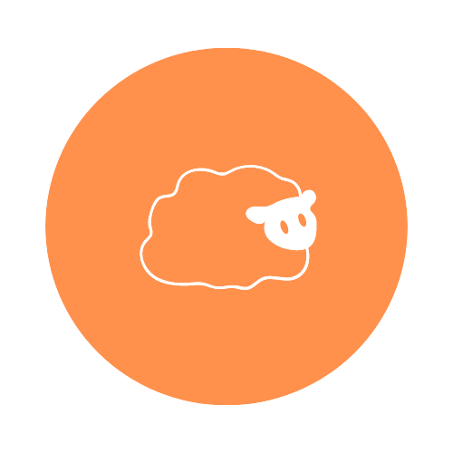

음성 녹음하기
마이페이지
로그아웃
PROFILE

{{ user.name }}
나이: {{user.age}} / {{user.gender}}
직업: {{user.occupation}}
{{user.email}}
Apple farm은 감정을 7가지로 분류하여 감정분석을 실시하였습니다.
7가지의 감정은 다음과 같습니다
neutral, happy, sad, angry, fearful, disgust, surprised
7가지의 감정비율 중 가장 높은 비율을 대표적인 감정으로 뽑았습니다.
분석내역
🗂️
{% if recordings %}
{% for recording in recordings %}
{{ recording.uploaded_at|date:"Y/m/d" }}
Emotion:
{% if recording.emotion_result %} {{ recording.emotion_result.emotion }} {% else %} 없음 {% endif %}
Gender:
{{ recording.gender }}
지금 내 기분은
{% if recording.emotion_result %} {% if recording.emotion_result.emotion == 'happy' %} 😄
행복해요 {% elif recording.emotion_result.emotion == 'sad' %} 😢
슬퍼요 {% elif recording.emotion_result.emotion == 'angry' %} 😡
화나요 {% elif recording.emotion_result.emotion == 'neutral' %} 😶
중립이에요 {% elif recording.emotion_result.emotion == 'fearful' %} 😱
무서워요 {% elif recording.emotion_result.emotion == 'disgust' %} 🤢
역겨워요 {% elif recording.emotion_result.emotion == 'surprised' %} 😧
놀라워요 {% else %} 없음 {% endif %} {% endif %}
[감정 비율 그래프]
Your browser does not support the audio element.
{% endfor %}
{% else %}
녹음 파일이 없습니다.
{% endif %}